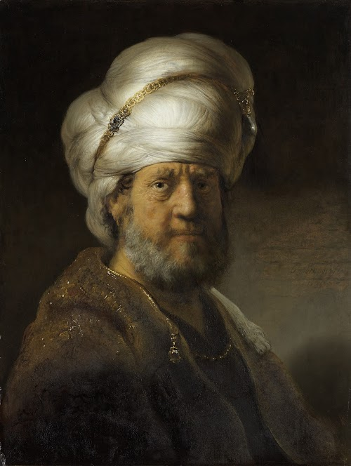
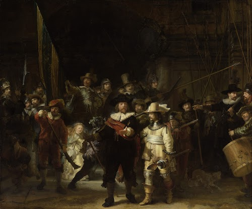
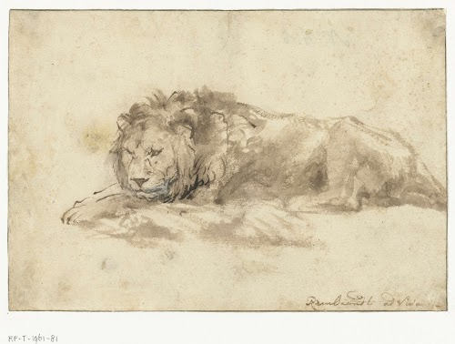
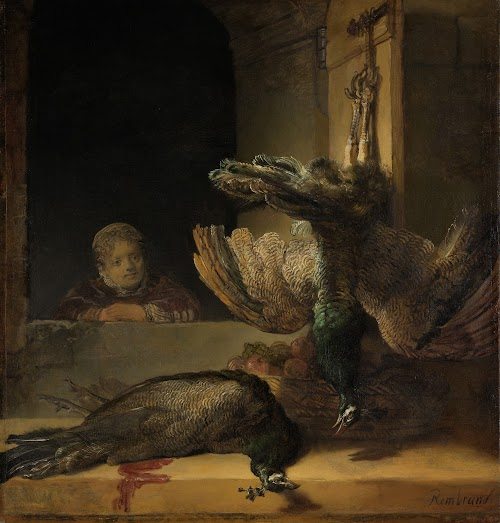
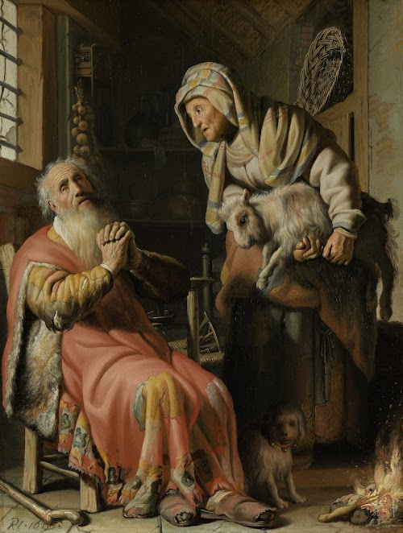

Rembrandt van Rijn collectie
- 
- 
- 
- 
-

- 
Op 19 november 1798, besloot de regering naar Frans voorbeeld een nationaal museum op te richten. Een prestigeproject om de liefde voor het land aan te wakkeren maar ook om belangrijke voorwerpen te bewaren. Op 31 mei 1800 opende deze Nationale Kunstgalerij voor het eerst zijn deuren in Huis Ten Bosch in Den Haag. Met ruim 200 schilderijen en historische voorwerpen, deels uit de stadhouderlijke collecties en deels uit (opgeheven) landelijke instellingen, zoals de VOC. De eerste aankoop, De Zwaan van Jan Asselijn, kostte 100 gulden en is nog steeds een van de topstukken van het Rijksmuseum.
Maandag: 9-17 uur
Disndag: 9-17 uur
Woensdag: 9-17 uur
Donderdag: 9-17 uur
Vrijdag: 9-17 uur
Zaterdag: 9-17 uur
Zondag: 9-17 uur


Onze complimenten voor de service van alle medewerkers. Iedereen was hartelijk en behulpzaam. Speciale dank aan dhr. R. Tirion. Door zijn hulp bij binnenkomst hebben wij een fijne dag gehad in het Rijksmuseum.
Altijd klantvriendelijk en netjes. Als er iets van je verwacht wordt. Afstand houden, tas niet om de rug maar voor op je buik. Wordt dat altijd netjes aangegeven. Een fijne garderobe en behulpzame helpdesk waar ze weten waar ze het over hebben. Het rijksmuseum is altijd al mijn favoriete uitje geweest. Om er meesterstudies te doen maar ook om de werken te bewonderen in stilte.